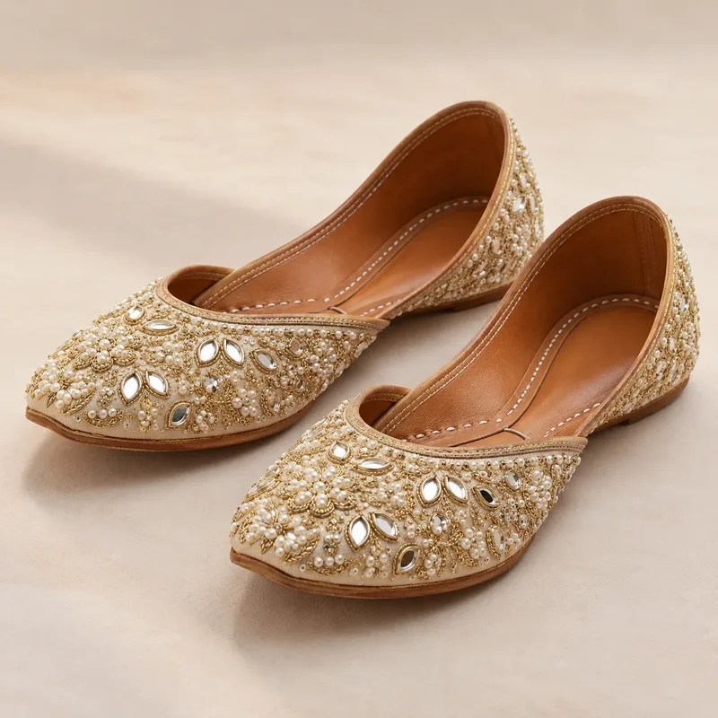
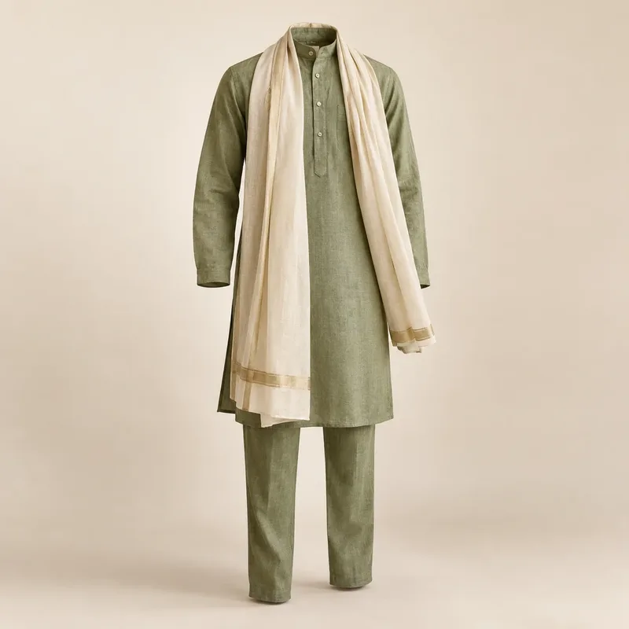
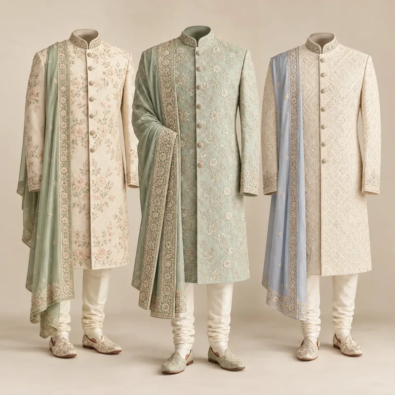
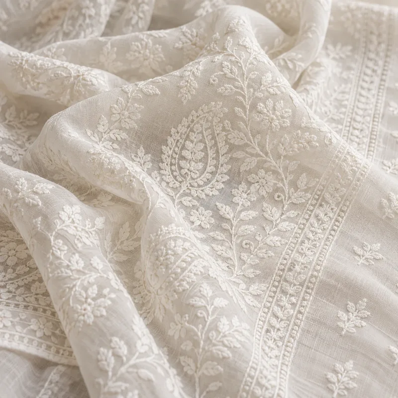

EmeraldPantone 18-5845 TCX
#0F6B4F · RGB 15, 107, 79
#0F6B4F · RGB 15, 107, 79
Deep, confident green; the festive key colour.
- Best for
- Anarkalis, lehengas, bandhgalas, silk sarees
- Pair with
- Champagne gold, Deep wine, Ivory


Colour Forecast · India 2026–28
Nine colours for Indian fashion from Festive 26 to Festive 28, in three families: festive jewels, calm handloom, and earth and indigo.
Forecut Editorial · 11 October 2026
Download PDF ↓Richer, more refined jewel tones for weddings and festive evenings, paired with soft metallics rather than bright yellow gold.
Deep, confident green; the festive key colour.
A clear, rich blue that bridges festive and evening.

A dark, warm red for winter weddings.


A soft metallic that replaces bright yellow gold.


Quiet, natural shades that let the weave and the hand-work show. Right for handloom, day functions and everyday ethnic wear.
A muted green-grey with a natural, hand-dyed feel.


Warm off-white; the base of quiet luxury.


A soft, grown-up pink for day functions.


Grounded heritage colours that work across ethnic, fusion and western wear, from denim to block prints.
The most-seen colour story at Lakmé Fashion Week 2026; the key colour for everyday.


A warm earth red with a craft and natural-dye feel.


Statuses are Forecut's forecast for India: Festive 26 (Oct 2026 – Feb 2027), Summer 27 (Mar – Jul 2027), Festive 27 (Aug – Dec 2027), and long-range outlooks for Summer 28 (Mar – Jul 2028) and Festive 28 (Aug – Dec 2028). Sources: India trends summarise public coverage of Lakmé Fashion Week x FDCI 2026 (Harper's Bazaar India, Free Press Journal), Aza Fashions festive and ethnic trend guides, Lashkaraa colour and silhouette trends 2026, Pearl Academy Gen Z trend reports, Gully Labs, Global Indian (Prada SS26 Kolhapuri-inspired sandals) and Outlook Business (Gen Z and e-retail).